Varejo Multimarca
Canais separados viraram uma plataforma só
Loja física e canais digitais passaram a ser medidos na mesma plataforma, em Azure.
BI & AnalyticsEngenharia de DadosCloud
Continuar lendo →
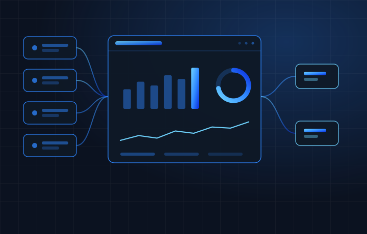
Do dado organizado à leitura do negócio: dashboards, self-service e governança de métricas.
Engenharia de DadosIngestão, armazenamento, transformação e governança — a base por onde o dado anda.
IA & AutomaçãoModelos preditivos, detecção de anomalias, GenAI e Document AI sobre a sua própria base.
Especialistas & Squads 150+ alocadosGente de dados dentro do seu time, em contratos de no mínimo 6 meses.
Cenário, arquitetura, stack e o antes e depois de cada entrega.
De 200+ painéis a um ambienteMigração e governança de BI em escala, com uma definição por métrica.
Legado Oracle aposentadoModernização para Google Cloud sem interromper a operação.
Setores atendidos 10+Do bancário ao food service, passando por saúde, educação e varejo.
Especialistas que entram na sua operação e respondem à sua gestão.
Perfis disponíveisEngenheiros, analistas, cientistas de dados e squads completos.
Trabalhe com a gente CarreirasBanco de talentos da Atlas: envie seu perfil e seu currículo.
Permanência 150 mil+ horasContratos de no mínimo 6 meses, muitos por tempo indeterminado.
Consultoria de tecnologia em dados e alocação de especialistas.
Valores e métodoClareza, resultado, profundidade e parceria — e como isso vira projeto.
Números 500+ projetosEntregas, setores, profissionais alocados e horas em alocação.
Parceiros 8 programasMicrosoft, Google, AWS, IBM, Databricks, Tableau, Snowflake e Oracle.
ContatoConversa de 30 minutos, com quem vai executar. Resposta em 1 dia útil.
Nosso portfólio reflete foco e excelência em arquitetura de dados, nuvem e inteligência artificial, transformando visão estratégica em valor de longo prazo.
Varejo Multimarca
Loja física e canais digitais passaram a ser medidos na mesma plataforma, em Azure.

Serviços Financeiros
Data Lake em Google Cloud com BigQuery, dbt e Airflow — e o legado fora da conta.
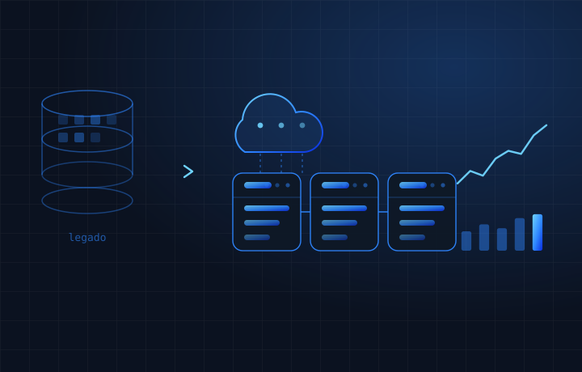
BI Governance
Mais de 200 dashboards com definições divergentes viraram um ambiente governado.
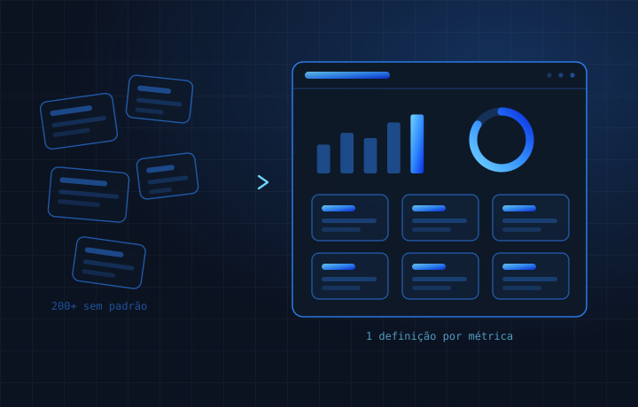
Categorias
Varejo Multimarca
Loja física e canais digitais passaram a ser medidos na mesma plataforma, em Azure.
Serviços Financeiros
Data Lake em Google Cloud com BigQuery, dbt e Airflow — e o legado fora da conta.
BI Governance
Mais de 200 dashboards com definições divergentes viraram um ambiente governado.
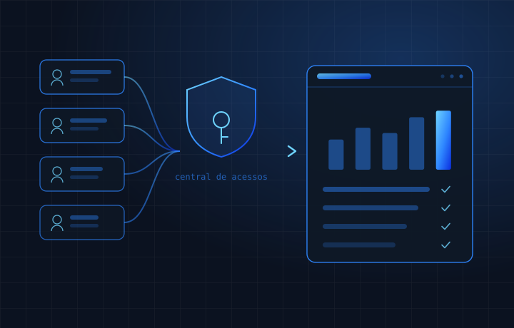
Instituição Financeira
Central de gerenciamento de acessos em Java e auditoria de acessos de toda a holding.
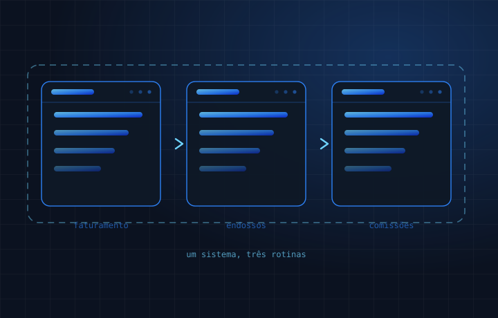
Corretagem de Seguros
Faturamento, lançamento de endossos e pagamento de comissões num sistema único.
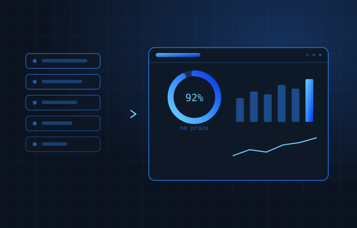
Software & Tecnologia
Os chamados do sistema de incidentes viraram indicadores de SLA, prazo e desempenho.
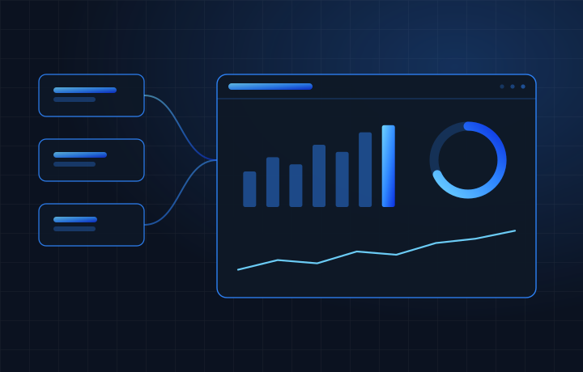
Turismo & Viagens
Viagens, hospedagens e locações consolidadas numa arquitetura ETL → DW → BI.
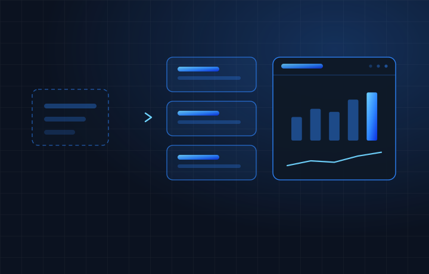
Serviços Financeiros
O departamento comercial saiu da extração pontual para uma camada de dados própria.
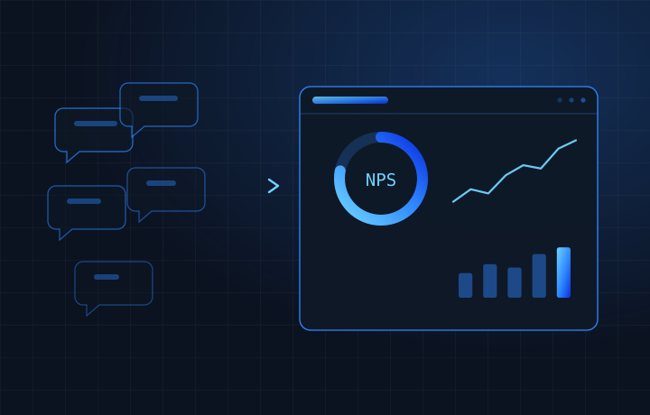
Bancário
O NPS deixou de ser relatório avulso e virou indicador de experiência acompanhado.
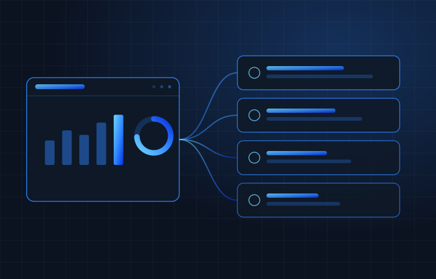
Varejo de Moda
Vendas, logística e operações com acesso aos mesmos indicadores, em toda a empresa.
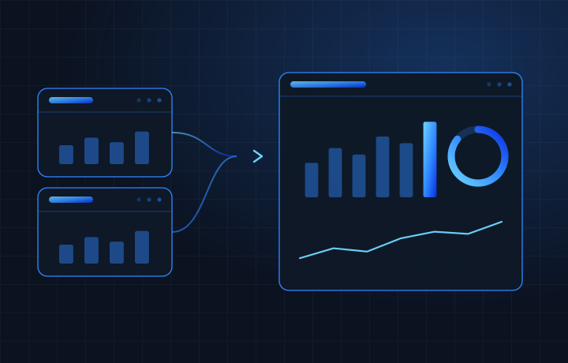
Saúde & Diagnóstico
Pipelines em BigQuery e Airflow, com a visualização migrada de Tableau para Power BI.
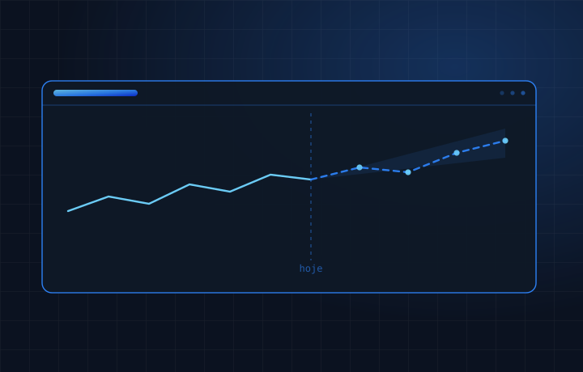
Educação
Modelos preditivos anteciparam a evasão escolar para apoiar ações preventivas.
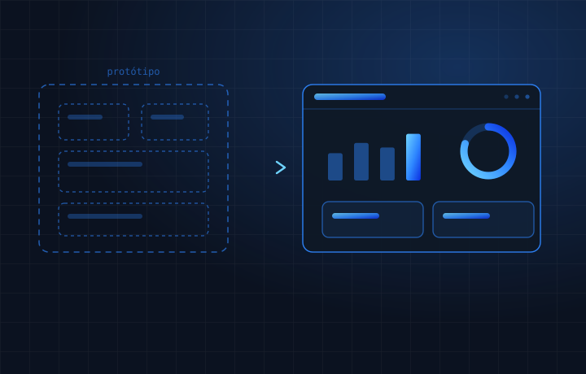
Saúde Hospitalar
Protótipos em Figma fixaram o padrão antes do desenvolvimento dos painéis.
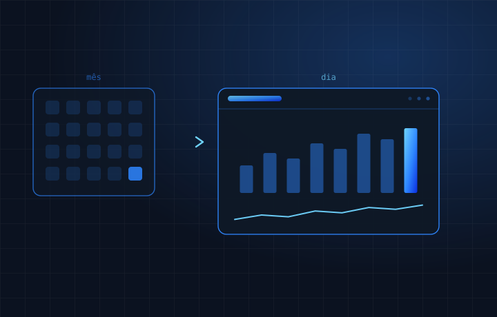
Food Service
Acompanhamento diário das unidades de um grande grupo de restaurantes.
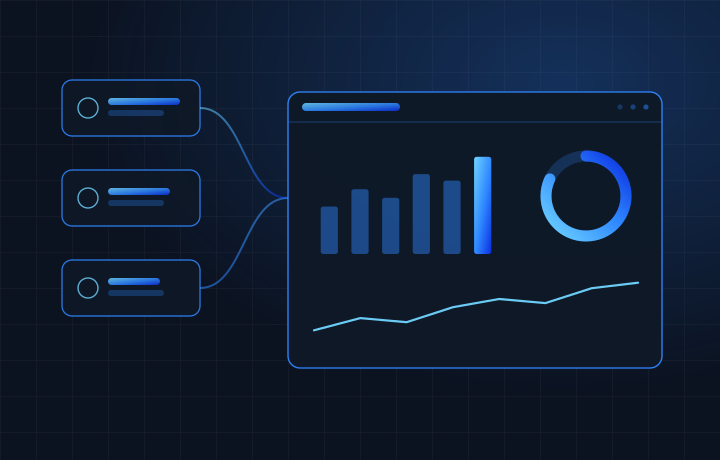
Infraestrutura & Mobilidade
Acidentes, pedágios e operação aeroportuária integrados numa visão única.